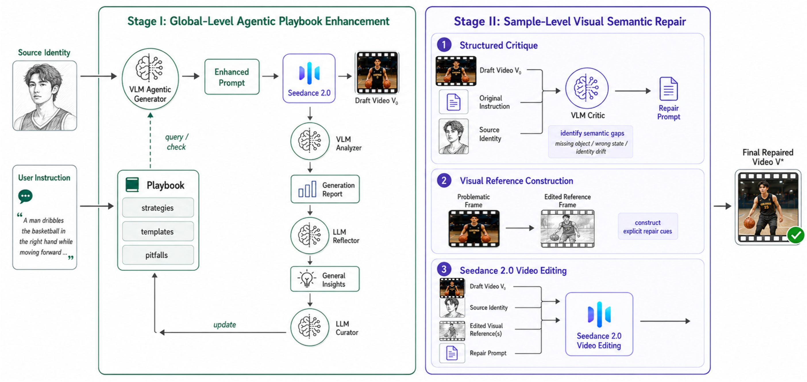
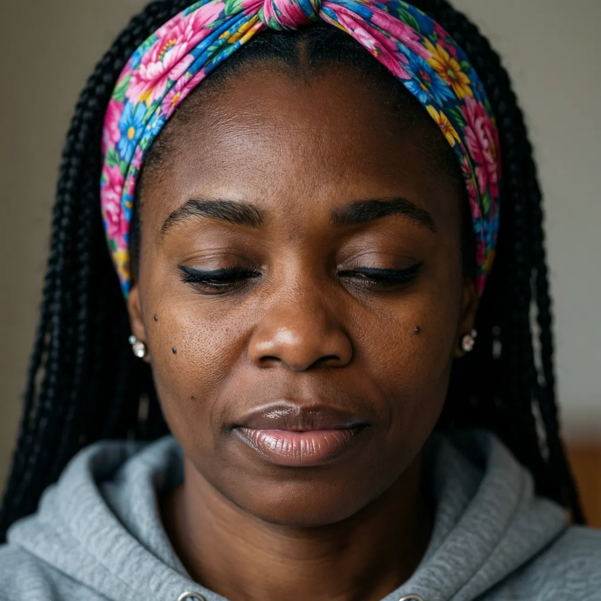
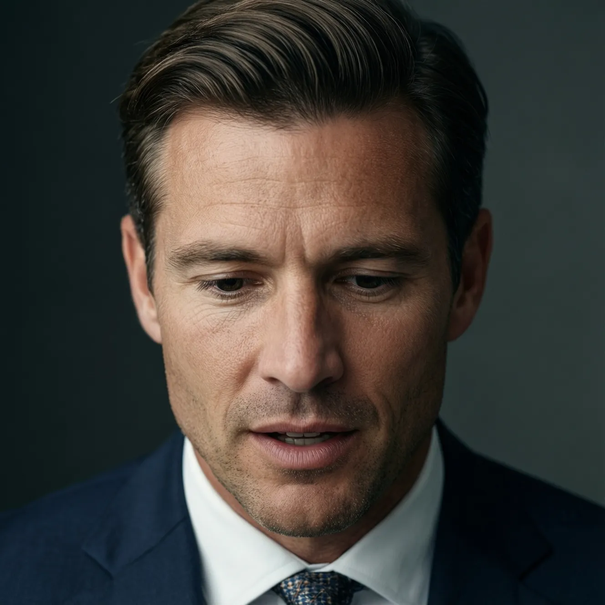

Identity-Preserving Text-to-Video Generation via Agentic Enhancement and Semantic Repair
Abstract
Identity-preserving video generation aims to synthesize videos that follow natural-language instructions while maintaining the visual identity of a given subject. Recent commercial video generation models have achieved strong visual quality and motion realism, but they still suffer from identity drift, incomplete instruction following, and missing visual details under complex prompts. Since these models are usually closed-source black boxes, directly improving them through parameter optimization is often infeasible. We therefore propose Agentic Enhancement and Semantic Repair (AESR), a lightweight enhancement framework for identity-preserving video generation. To improve prompt construction before generation and mitigate the above failures, AESR introduces a global agentic prompt enhancement module. This module learns model-specific prompting formats from official documentation, acquiring human-centered video generation priors from human-interaction data, and accumulates test-domain identity-preserving generation experience into a reusable playbook through an agentic loop. To repair draft-specific errors after generation, AESR further introduces a sample-level visual semantic repair module, which uses a VLM to locate erroneous video segments and design repair instructions, edits selected frames into explicit visual references, and guides a video editing model to fix local semantic or identity-related errors. We also adopt a lightweight Mixture-of-Experts selection strategy to choose reliable outputs from different generation and refinement paths. Under the official evaluation protocol of the ACM MM 2026 Identity-Preserving Video Generation Challenge, our system MIPL_Video ranked first in Track 1, demonstrating the effectiveness of AESR for practical identity-preserving video generation.
Method Overview

AESR generates an identity-preserving video through two complementary stages. Stage I uses a reusable agentic playbook to transform the original instruction into a model-aware prompt before video synthesis. Stage II analyzes the resulting draft, identifies semantic gaps, constructs explicit edited visual references, and guides targeted video refinement.
Examples
A young Latino man with sleek dark hair, a neatly trimmed goatee, and prominent black ear gauges carves dynamically across a surreal sheet of ice laid on golden beach sand. As the fiery orange sun dips below the horizon, he maintains a steady forward gaze, scanning the path. Mid-movement, he abruptly pivots his head sharply to the right, his gaze shifting to track a breaking wave before snapping back to the center. A dynamic tracking shot moves laterally alongside him, matching his speed, while simultaneously zooming in to frame his focused expression against the cooling twilight sky.
Document-based Playbook

A middle-aged Black woman with long black braids secured by a vibrant pink and blue floral headband and wearing a soft grey hoodie sits perched on the edge of the top bunk of a wooden bunk bed, turning her head slightly to the side and lowering her gaze with a gentle, focused expression as she extends a hand to award a gleaming gold medal.
Document-based Playbook
A middle-aged Caucasian woman with long wavy dark brown hair and distinct freckles scattered across her nose is smiling broadly while shifting her gaze from a catalog to the seller to bid on a valuable piece of art during an exclusive outdoor auction event held within the quiet, sun-drenched stone courtyard of a serene monastery garden surrounded by ancient towering walls and blooming flowers as the camera performs a slow rack focus pan around her expressive face.
Document-based Playbook

A middle-aged Caucasian man is meticulously carving a detailed figurine out of wet clay on a makeshift wooden crate station in a bustling fish market, starting with his gaze fixed intensely downward on his sculpting tools before he slowly turns his head upward to engage the viewer with a piercing stare while the camera executes a smooth, compound tracking shot moving closer and racking focus from the busy vendors in the background to his serious facial features, emphasizing the contrast between his formal business attire and the raw, messy environment surrounding him.
Document-based Playbook
BibTeX
@inproceedings{gao2026aesr,
title={Identity-Preserving Text-to-Video Generation via Agentic Enhancement and Semantic Repair},
author={Gao, Jiayi and Hua, Changcheng and Tang, Jiaqi and Peng, Yuxin and Liu, Yang},
booktitle={Proceedings of the ACM International Conference on Multimedia},
year={2026}
}